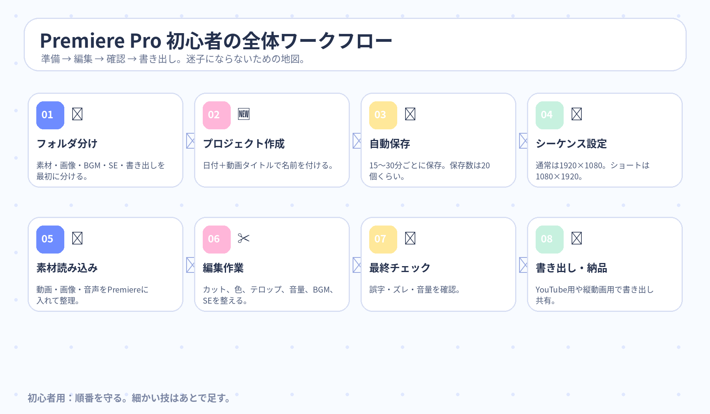
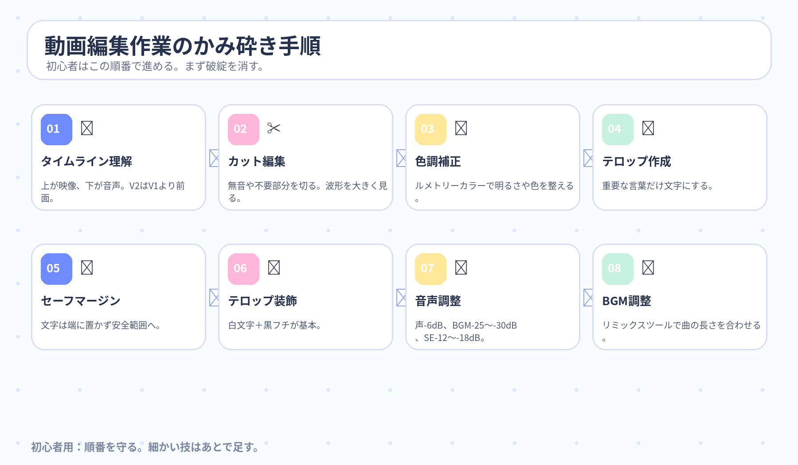

AIは、むずかしい機械じゃない。
まずは「人の作業を助ける賢い道具」だと思えばOK。
AI（人工知能）に苦手意識がある人でも、迷わず読めるように作った。難しい言葉はその場でやさしく言い換え、最後に用語辞典も置いてある。
1. AIの正体は？
AIは「人の頭の仕事を少し肩代わりする道具」。電卓が計算を助けるなら、AIは文章作成や情報整理を助ける。

AIって、勝手に全部やってくれる万能マシンなの？

AIは人の考える作業を手伝うコンピューターって思うと分かりやすいよ。
やさしく言うと：考える・探す・まとめる・予測する作業を速くしてくれる道具。2. AIの歴史は3回ブームがあった
人が決めたルールで動かす。
専門家の判断を詰め込む。
AIがデータからコツを覚える。
3. 生成AIとLLM
文章・画像・音声・動画などを新しく作るAI。作る係。
大量の文章を学んで、次に来そうな言葉を予測するAI。文章担当の頭脳。
4. GeminiはGoogle版の相談相手
- メール文の下書き
- 長文やPDFの要約
- タスク整理
- 会議メモの整理
AIの回答は完成品じゃなく下書き。数字・法律・医療・契約・最新情報は人が確認する。
Premiere Proは、最初から全部覚えなくていい。
「片付け → 並べる → 切る → 整える → 出す」でいい。
Premiere Pro（動画編集ソフト）はボタンが多くて怖い。でも初心者が最初に覚える流れは、素材整理、キャンバス作成、カット、文字と音の調整、書き出しだけ。
1. 最初の準備｜編集前に机を片付ける
最初にやることは派手な編集じゃない。素材整理だ。ここをサボると素材探し地獄になる。
Premiere Proって、開いた瞬間に何から触ればいいのか分からなくなりそう……。

まずはパソコンの中で動画素材・画像・BGM・SE・書き出しに分けるの。
やさしく言うと：料理する前に、肉・野菜・調味料を分ける感じ。日付＋動画タイトル。例：2026-07-01_商品紹介動画。
15〜30分間隔、保存数20個くらい。データ消失の保険。
ビン（Premiere内のフォルダー）で素材を分ける。
2. 画面とタイムライン｜地図を覚える
素材置き場。動画・画像・音声を入れる。
動画を並べる作業台。上が映像、下が音声。V2はV1より前に見える。
完成画面を見る場所。今の編集結果を確認するテレビ。
完成動画のキャンバス。通常は1920×1080、ショートは1080×1920。
3. カット・色・テロップ｜見やすさを作る
音声波形を大きく表示し、無音や言い間違いを切って削除する。
ルメトリーカラーで明るさや色を整える。
重要な言葉を文字にする。白文字＋黒フチが基本。
複数クリップにまとめて色補正をかける透明フィルム。
文字が見切れにくい安全範囲。端に置かない。
位置・スケール・回転で文字に動きを付ける。
4. 音声・BGM・SE｜耳が疲れない動画にする
BGMを爆音にすればテンション上がるんじゃない？
声が聞こえなかったら終わり。目安は声-6dB、BGM-25〜-30dB、SE-12〜-18dBくらい。
dB（デシベル）＝音の大きさの目安。0に近いほど大きい。動画全体の雰囲気作り。リミックスツールで動画尺に合わせやすい。
動きやテロップを強調する効果音。入れすぎるとうるさい。
5. 最終チェックと納品｜最後に事故を潰す
- 誤字脱字
- テロップのズレ
- 映像クリップのズレ
- 音量バランス
- 見切れ
YouTube通常動画は「YouTube 1080フルHD」。ショート動画は縦向きプリセット。
ギガファイル便などで共有。保存期間は100日に設定。
派手な技より、ミスが少ない・納期を守る・確認が丁寧。この3つが強い。
6. ワークフローと編集作業の図解
動画の全体作業と実際の編集手順を画像で分けた。まずこの2枚だけ見れば順番で迷いにくい。


Canvaは、白紙から頑張らなくていい。
「テンプレを選んで、写真と文字を差し替える道具」だと思えばOK。
Canva（オンラインでデザインや動画を作れるツール）は、初心者に優しい。デザイン、プレゼン、動画編集、文書、表、ホームページ、生成AIまで触れる。最初は全部覚えなくていい。まずはテンプレート（完成形に近い見本）を使えばいい。
Day2の内容は、前半と後半に分けず、全部「Day2前半」として読める形にまとめた。
1. Canvaの正体｜見本から作れるデザイン作業台
Canvaは「絵がうまい人だけが使う道具」じゃない。見本を選んで、写真・動画・文字を入れ替えるだけでも形になる。
Canvaって、デザインセンスがないと無理なやつ？
むしろ逆。テンプレートを使えば、初心者でもかなり見た目を整えやすい。
やさしく言うと：完成見本を借りて、自分用に着替えさせる道具。
学校だより、掲示物、授業資料、部活のお知らせ、リール動画などにも使いやすいです。素材や日本語フォントも多いです。
テンプレートが豊富。白紙から悩まなくていい。
画像やイラストを別サイトで探さず、画面上で使える。
授業、委員会、部活、学校だより、掲示物に使いやすい。
2. Canvaでリール動画｜まずは差し替えで作る
Instagramリールは、Canvaだけでも作れる。初心者は「SNS」→「Instagramリール動画」を選んで、縦長サイズで始める。
中央が編集エリア、左がメニュー、下がタイムライン。まずこの3つだけ覚える。
- テンプレート
- 素材
- テキスト
- アップロード
ページ順、シーンの長さ、音楽の位置、全体の流れを調整する場所。
文字の読みやすさ、差し替えやすさ、動きの多さ、ジャンルとの相性を見る。
テンプレを選ぶ → 写真と動画を差し替える → 文字を直す → 再生して確認。この順番だけでいい。
3. 字幕・音声・書き出し｜AI機能は下書き係
動画を選んで字幕を生成。誤字や変な区切りは必ず直す。
無料プランでは王冠マークがない音源を選ぶ。音量やフェードも調整する。
自分の声で録音もできる。AI音声で読み上げを作る方法もある。
文字が読めるか、動きが速すぎないか、流れが自然か確認する。
完成後は「共有」→「ダウンロード」からMP4で保存する。
連携すればカバー画像やキャプションを設定して投稿できる。
4. Canvaワークフロー図解
Canva全体の作業順を画像にした。画像クリックで拡大できる。

Day2前半つづき｜文字と配色は、センスじゃなくて順番。
「読める → 合ってる → 少し飾る」で事故を減らせる。
テロップや文字デザインは、読みやすさが最優先。コントラストが弱い、フォントが内容と合わない、グラデーションが強すぎる。この3つを避けるだけでかなりマシになる。
5. フォント選び｜文字にも声がある
- IPX明朝：見やすく美しい明朝体
- IBM Plex Sans JP：太さを選びやすいゴシック体
- スセリフ JP：便利な明朝体
- 集名営格ゴシック銀：細めで読みやすい
- タワラビゴシック：柔らかく可愛い印象
内容に合うか、小さくしても読めるか、太さを選べるかを見る。怖い演出に可愛いフォントを使うと空気が崩れる。
6. ダサ見え回避｜盛りすぎより読みやすさ
暗い文字に暗い縁取りは読みにくい。
迷ったらこの組み合わせが強い。
紫×赤、紫×黄色などは目が疲れやすい。
分かるか分からないくらい控えめにする。
ただ文字を置くと安っぽく見えやすい。
少しだけ立体感や読みやすさを足す。
7. 文字デザイン小技｜分解すれば怖くない
- 背景動画を置く
- アルファベットのフレームを置く
- 同じ動画を文字数分コピー
- 各フレームに動画を入れる
- 切り抜きで位置をそろえる
- 写真を全面に置く
- 写真をコピーしてぼかす
- ぼかし写真を少し縮めて重ねる
- 白い線で枠を作る
- 白文字を置いて読みやすくする
8. 文字選び・配色作業の図解
文字選びと配色の順番を画像にした。画像クリックで拡大できる。

動画編集ソフト選びは、最初の分岐点。
迷ったらDaVinci Resolve、仕事狙いならPremiere Pro。
動画編集ソフトは、あとから乗り換えると操作、ショートカット（作業を速くするキー操作）、作業速度を覚え直すことになる。だから最初の選び方はかなり大事。目的・端末・予算・将来性で決めよう。
1. 最初のソフト選び｜道具選びは家選びみたいなもの
最初のソフト選びは、あとで地味に効いてくる。慣れたソフトから別ソフトへ移ると、ボタンの場所もショートカットも考え方も変わる。最初に方向を決めておくと遠回りしにくい。
動画編集ソフトって多すぎない？ どれ選べばいいのか分からないよ……。
まずはPCでやるのか、スマホでやるのかを決めるの。PCならPremiere Pro、Final Cut Pro、DaVinci Resolveが主力。
やさしく言うと：包丁を買う前に、家のキッチンで料理するか、外で弁当を作るか決める感じ。超ざっくり言うと、長くやるならDaVinci Resolve、仕事案件ならPremiere Pro、Macで量産ならFinal Cut Proだね。
Premiere Pro、Final Cut Pro、DaVinci Resolveが主力。
iPhone版Premiere Pro、CapCutが入りやすい。
目的、端末、予算、学びやすさ、将来性で決める。
2. PC向け3大ソフト｜仕事・速さ・総合力で分かれる
業界標準。YouTube、CM、企業PV、テレビ制作など案件に強い。Adobe連携も強い。弱点は高額サブスクと重さ。
Mac向け最速系。毎日投稿、テンプレ動画、大量生産に強い。弱点はMac専用で、表現の上限を感じる場合がある。
総合力が高い一押し。無料版でも強い。カラー編集、音声、VFX（映像効果）、字幕生成まで広く対応。弱点は最初だけ画面が複雑。
長く動画編集を続けるならDaVinci Resolve。仕事・案件の入口を広げたいならPremiere Pro。Macで毎日投稿や時短を重視するならFinal Cut Pro。
3. スマホ編集｜短尺ならスマホでも戦える
無料・商用利用可能が強い。アフレコ、音声強調、レイヤー編集もできる。SNS動画、Vlog、ショート動画と相性がいい。
TikTok系、ポップな動画、簡単編集に強い。ただし有料機能が増えているため、収益化では商用利用条件に注意。
4. その他ソフト｜簡単さだけで選ぶと伸びしろで詰まる
シンプルな動画だけなら使いやすい。ただし編集にハマると自由度が物足りなくなりやすい。
日本の制作現場で使われてきたソフト。ただし今から始める優先度は、Premiere Pro、Final Cut Pro、DaVinci Resolveより低め。
5. 結論｜迷ったらDaVinci Resolve
DaVinci Resolve。無料版が強く、長く使える伸びしろがある。
Premiere Pro。仕事の募集や業界浸透度はまだ強い。
Final Cut Pro。毎日投稿や大量生産に向く。
iPhone版Premiere Pro。スマホでも本格構成を作りやすい。
CapCut。ポップな短尺を早く作りたい人向き。
最初から伸びしろのあるソフトを選ぶ。覚え直しは地味に重い。
6. 動画編集ツール選びの図解
ソフト選びの順番と、主要ツールの違いを画像にした。画像クリックで拡大できる。


用語辞典プルダウン
分からなくなったら、ここだけ見返せばOK。全部閉じた状態。
AI（人工知能）
もっと簡単に：考える仕事を少し肩代わりしてくれる道具。
LLM（大規模言語モデル）
もっと簡単に：次に来そうな言葉を予測する文章係。
Canva
もっと簡単に：見本からサクッと見た目を作れる便利道具。
テンプレート
もっと簡単に：写真や文字を差し替えるための土台。
自動字幕
もっと簡単に：字幕の下書きを一瞬で作る機能。
DaVinci Resolve
もっと簡単に：無料でもかなり強い、長く使える本命ソフト。
Final Cut Pro
もっと簡単に：Macで速く編集したい人向け。
CapCut
もっと簡単に：TikTok風動画をサクッと作りやすい道具。
VFX（映像効果）
もっと簡単に：光、合成、爆発、魔法っぽい演出などを足す作業。
SRTファイル
もっと簡単に：字幕の台本と表示時間が入ったファイル。
Premiere Pro
もっと簡単に：動画、音、文字を並べて完成動画にする作業台。
シーケンス
もっと簡単に：動画を作るための白い紙。
タイムライン
もっと簡単に：動画の部品を横に並べる作業机。
セーフマージン
もっと簡単に：文字を置いても事故りにくい内側エリア。
dB（デシベル）
もっと簡単に：声や音楽の大きさメーター。
BGM / SE
SE：効果音。動きやテロップを強調する短い音。